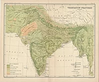
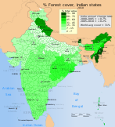
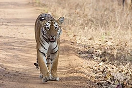
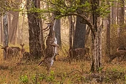

Biodiversity

India is a megadiverse country, a term employed for 17 countries which display high biological diversity and contain many species exclusively indigenous, or endemic, to them. India is a habitat for 8.6% of all mammal species, 13.7% of bird species, 7.9% of reptile species, 6% of amphibian species, 12.2% of fish species, and 6.0% of all flowering plant species. Fully a third of Indian plant species are endemic. India also contains four of the world's 34 biodiversity hotspots, or regions that display significant habitat loss in the presence of high endemism.

India's forest cover is 99,278 km2 (38,331 sq mi), which is 21.67% of the country's total land area. It can be subdivided further into broad categories of canopy density, or the proportion of the area of a forest covered by its tree canopy. Very dense forest, whose canopy density is greater than 70%, occupies 3.02% of India's land area. It predominates in the tropical moist forest of the Andaman Islands, the Western Ghats, and Northeast India. Moderately dense forest, whose canopy density is between 40% and 70%, occupies 9.39% of India's land area. It predominates in the temperate coniferous forest of the Himalayas, the moist deciduous sal forest of eastern India, and the dry deciduous teak forest of central and southern India. Open forest, whose canopy density is between 10% and 40%, occupies 9.26% of India's land area, and predominates in the babul-dominated thorn forest of the central Deccan Plateau and the western Gangetic plain.
Among the Indian subcontinent's notable indigenous trees are the astringent Azadirachta indica, or neem, which is widely used in rural Indian herbal medicine, and the luxuriant Ficus religiosa, or peepul, which is displayed on the ancient seals of Mohenjo-daro, and under which the Buddha is recorded in the Pali canon to have sought enlightenment.

Many Indian species have descended from those of Gondwana, the southern supercontinent from which India separated more than 100 million years ago. India's subsequent collision with Eurasia set off a mass exchange of species. However, volcanism and climatic changes later caused the extinction of many endemic Indian forms. Still later, mammals entered India from Asia through two zoogeographical passes flanking the Himalayas. This had the effect of lowering endemism among India's mammals, which stands at 12.6%, contrasting with 45.8% among reptiles and 55.8% among amphibians. Notable endemics are the vulnerable hooded leaf monkey and the threatened Beddom's toad of the Western Ghats.

India contains 172 IUCN-designated threatened animal species, or 2.9% of endangered forms. These include the endangered Bengal tiger and the Ganges river dolphin. Critically endangered species include: the gharial, a crocodilian; the great Indian bustard; and the Indian white-rumped vulture, which has become nearly extinct by having ingested the carrion of diclofenac-treated cattle. The pervasive and ecologically devastating human encroachment of recent decades has critically endangered Indian wildlife. In response, the system of national parks and protected areas, first established in 1935, was expanded substantially. In 1972, India enacted the Wildlife Protection Act and Project Tiger to safeguard crucial wilderness; the Forest Conservation Act was enacted in 1980 and amendments added in 1988. India hosts more than five hundred wildlife sanctuaries and thirteen biosphere reserves, four of which are part of the World Network of Biosphere Reserves; twenty-five wetlands are registered under the Ramsar Convention.
For previous page
click here